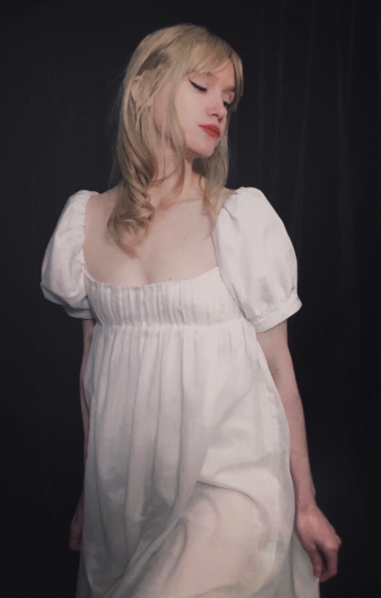
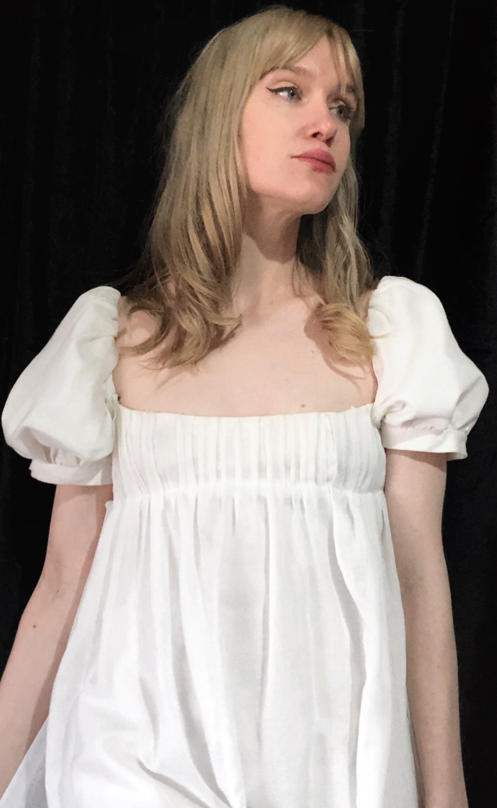
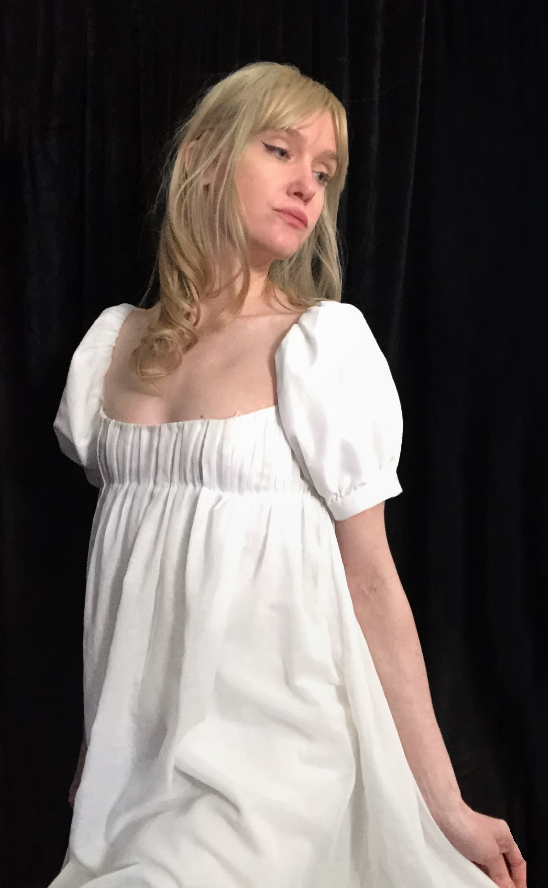

Modeled by the sea, reservoir of all power, thou reignest over us by that perfect grace, that tranquility which strength alone posesses.
This dress started out as a simple maquette, a rough muslin draft of what would eventually become the basis for all of the dresses I made in a similar style. I didn't want the draft to be thrown in a sewing box, so I hand-pleated and draped this sheer cotton voile on top.
this dress reminds me of usagi's princess dress in sailor moon, or the venus de milo.



